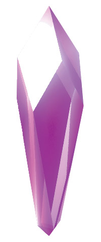
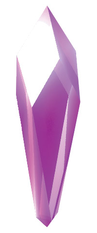

Welcome!
About Me
Hello, my name is Keith Hemsoth. I am currently working for Cleveland Communications, Inc. We are contracted through First Energy Nuclear to install, maintain and repair outdoor warning sirens for the Perry, Davis Besse, and Beaver Valley nuclear plants.
After obtaining an Associates of Applied Science in Electronic Engineering Technology, I have worked in the field for a few years. I quickly came to realize that it was not what I was passionate about. I felt like working on electronics was more of a hobby that I would like to have, rather than a career.
This is when I decided to look into being a developer. I have always had an interest in coding, and have spent some time here and there dabbling in coding. However, I never set aside time everyday to really learn how to code. After making the conscious decision to spend time each day learning, I knew that is what I wanted to do.
Currently, I am enrolled in a full-stack web development bootcamp at Case Western Reserve University, and am loving every minute. It may be fast paced, but the information that we are learning is fascinating to me.
As for the future, I am leaning toward focusing on the back-end of web development, however, that could easily change down the road. Either way, I am very excited about my future and am looking forward to learning as much as I can about web development.
Portfolio
 
